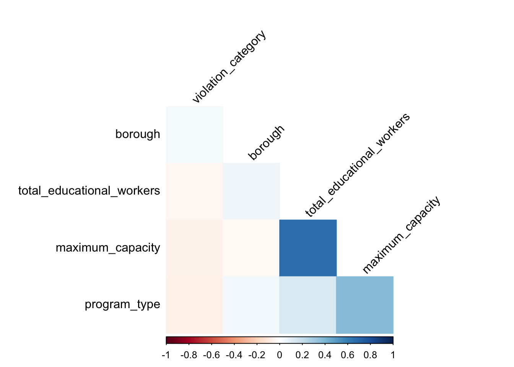

Filter the variables to include currently permitted Children Care Center
Question: should we consider permitted (17356) or permitted+ active (3399)(school)
step1:filter the inspection record for only currently permitted Children Care Center
step2:remove the useless variables: legal_name, building, street, phone, permit_number, permid_expiration, day care id, url, date_permitted, actual.
Childcare_center<-
raw_data%>%
janitor::clean_names() %>%
filter(status=="Permitted")%>%
select(-legal_name,-building,-street,-phone,-permit_number,-permit_expiration,
-day_care_id,-url,-date_permitted,-actual)%>%
drop_na(violation_rate_percent)%>%
drop_na(public_health_hazard_violation_rate)We investigated the severity of the presence of violation records in different types of inspections. The data graphs show that no-violation is the most frequent among the different types of inspections, and general violation is the highest among the inspections of initial annual inspection and monitoring inspection non-routine, except for no-violation. On the contrary, in the compliance inspection of open violations, critical cases are indeed more than general. lead based paint or lead in water inspection, although the number is small, we can still see that most of them are no-violation.
inspec_violation_summary<-
Childcare_center%>%
select(borough,inspection_summary_result,violation_category)%>%
mutate(violation_category = ifelse( is.na(violation_category), "NO VIOLATION", violation_category))%>%
drop_na(inspection_summary_result)%>%
mutate(
general_category=case_when(
inspection_summary_result %like% "^Compliance Inspection of Open Violations" ~"Compliance Inspection of Open Violations",
inspection_summary_result %like% "^Initial Annual Inspection" ~"Initial Annual Inspection",
inspection_summary_result %like% "^Lead Based Paint or Lead in Water Inspection" ~"Lead Based Paint or Lead in Water Inspection",
inspection_summary_result %like% "^Monitoring Inspection Non-Routine" ~"Monitoring Inspection Non-Routine")
)%>%
group_by(general_category,violation_category)%>%
summarise(
n_obs=n()
)%>%
ggplot(aes(fill =violation_category, x=general_category,y = n_obs))+
geom_bar(position = "dodge", stat = "identity")+
theme(axis.text.x = element_text(size=10, angle=45, hjust = 1))+
labs(y="number of violations",title="Inspection categories vs.violation categories",x="inspection categories")## `summarise()` has grouped output by
## 'general_category'. You can override using
## the `.groups` argument.ggplotly(inspec_violation_summary)We also listed the childcare center names with violation frequency as follows. We can see that “beans talk childcare academy” has the highest violation frequency of 189. “Noreast Bronx Daycare” and “Children of America Queens” also have violation frequency larger than 100. For parents who want to choose childcare center may want to avoid these centers with frequent violations.
children_center_name = children_center<-
raw_data%>%
janitor::clean_names()%>%
mutate(
center_name=tolower(center_name),
center_name=gsub('[[:punct:] ]+',' ',center_name),
center_name=gsub(" ","",center_name),
center_name=gsub("llc","",center_name),
center_name=gsub("inc","",center_name),
center_name=gsub("th","",center_name),
center_name=gsub("school","",center_name),
center_name=gsub("center","",center_name),
center_name=gsub("ctr","",center_name)
)%>%
mutate(borough = as.factor(borough), program_type = as.factor(program_type)) %>%
filter(violation_category != "NO VIOLATION") %>%
mutate(violation_category = "VIOLATION") %>%
group_by(center_name,borough) %>%
count() %>%
arrange(desc(n))
children_center_name## # A tibble: 1,706 × 3
## # Groups: center_name, borough [1,706]
## center_name borough n
## <chr> <fct> <int>
## 1 beanstalkchildcareacademy BRONX 189
## 2 noreastbronxdaycare BRONX 116
## 3 childrenofamericaqueens QUEENS 102
## 4 brighorizonschildrenss MANHATTAN 94
## 5 montessoriprogressivelearning QUEENS 90
## 6 qsac QUEENS 78
## 7 allmystarsdaycare QUEENS 73
## 8 habitot BRONX 73
## 9 littlescholarsearlydevelopment BRONX 68
## 10 booksrattles QUEENS 63
## # … with 1,696 more rowsTo get an overview of the regulation summaries, we listed the top 10 regularion summary notes. We can see that in most of the inspection, there’s no new violation, which is a good thing. The second common regulation summary is that floors and walls were not maintained. Other common inspection regulation notes include: the medical clearance of stuffs is not satisfied (vaccination), not enough stuff training hours, water supply problems…
Childcare_center %>%
group_by(regulation_summary) %>%
summarise(Frquency = n()) %>%
arrange(desc(Frquency)) %>%
top_n(10) %>%
knitr::kable()| regulation_summary | Frquency |
|---|---|
| There were no new violations observed at the time of this inspection/visit. | 7545 |
| At time of inspection floors/walls ceilings were observed Not maintained; in disrepair or covered in a toxic finish. | 972 |
| Staff and volunteers obtain documentation showing immunization with 2 doses measles/mumps, 1 dose rubella, 2 doses varicella and 1 dose Tdap. Medical exemptions only. History of measles, mumps or rubella shall Not replace MMR vaccine except in presence of MMR varicella antibodies. | 615 |
| At time of inspection it was determined that child care service allows staff to perform their duties that are Not healthy or are incapable of carrying out their duties. Staff medical clearances are Not maintained by child care service. | 502 |
| Enrolled children 6 months to 59 months have Not received FDA approved annual influenza immunization by December 31 of the year | 430 |
| At time of inspection it was determined that child care service failed to ensure staff received required training within time frames and/or failed to maintain training records. | 428 |
| At time of inspection child care service facility observed Not maintained or in disrepair. Dry sweeping observed in areas occupied by children. | 286 |
| Exits and other egress Not provided with required signage at time of inspection. | 228 |
| Staff failed to obtain proof of immunization; Except for exempt staff, required staff immunizations were not submitted to child care service; records not confidential. | 192 |
| Fingerprint screening Not arranged for current and prospective personnel; Results Not satisfactory or CAP was Not approved | 189 |
Childcare_center %>%
drop_na() %>%
group_by(inspection_summary_result) %>%
summarise(Frquency = n()) %>%
arrange(desc(Frquency)) %>%
top_n(10) %>%
knitr::kable()| inspection_summary_result | Frquency |
|---|---|
| Initial Annual Inspection - Reinspection Required; Fines pending | 3163 |
| Initial Annual Inspection - Reinspection Not Required | 1169 |
| Initial Annual Inspection - Reinspection Required | 853 |
| Monitoring Inspection Non-Routine - Reinspection Required; Fines pending | 430 |
| Compliance Inspection of Open Violations - Reinspection Required; Fines pending | 175 |
| Initial Annual Inspection - Reinspection Required; Program closed | 155 |
| Initial Annual Inspection - Passed inspection; Violations corrected at time of inspection | 148 |
| Monitoring Inspection Non-Routine - Reinspection Not Required | 130 |
| Compliance Inspection of Open Violations - Reinspection Required | 106 |
| Monitoring Inspection Non-Routine - Reinspection Required | 71 |
We created the correlation heat map to see the relationship between each variables that we are interested in. We can see that borough seems to have positive association with violation, while total educational workers, maximum capacity and program type have negative association. We will focus on exploring the relationship between these variables in the following analysis.
Childcare_center %>%
select(borough, total_educational_workers, program_type, maximum_capacity, violation_category) %>%
mutate(violation_category = ifelse( is.na(violation_category), "NO VIOLATION", violation_category)) %>%
mutate(borough = as.numeric(as.factor(borough)),
program_type = as.numeric(as.factor(program_type)),
violation_category =as.numeric(as.factor(violation_category)) )%>%
drop_na() %>%
cor(method = "pearson" ) %>%
corrplot(
method = "color",
type = "lower",
tl.col = "Black",
tl.srt = 45,
diag = F,
order = "AOE"
)